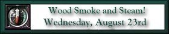

Updated nightly from beautiful downtown Ouray, Colorado!
|
Welcome to San Juan Odyssey 2000. This years trip is a little different than those in past years. We will still be trying to conquer the mighty San Juan Mountains in our trusty 4x4 vehicles. In addition, we will be participating in more railfan related activities in Durango, and in Silverton.
Fro the last two years the Durango and Silverton Narrow Gauge Railroad has sponsored an event they call Railfest. Railfest is held in Durango, Colorado. There are numerous activities for the narrow gauge railfan at Railfest. We have decided to participate in two of the special trains on the D&SNGRR. We will be riding behind Eureka & Palisades #4 on a special train to Silverton on Wednesday. The Eureka & Palisades #4 is a beautiful 4-4-0 locomotive from the 1880 time period. The locomotive was painstakingly restored by its proud owner, Dan Markoff. I would like to thank Dan for sharing his pride and joy with all of us! On Thursday we will be riding former RGS Goose #5 followed by Goose #1. Goose #5 was lovingly restored by the folks in Dolores, Colorado. Goose #1 is actually a recreation of the prototype. The folks at the Ridgway Railroad Museum are to be congratulated on an excellent piece of work. We also have a few trips into the hills planned. This years trip is nothing like those in the past. We will not be breaking an records for number of passes crossed. We may even make it down Black Bear again, who knows.......... |


|
The Narrow Gauge Circle is written, maintained,and hosted by: Mark L. Evans Send Comments to:Mark L. Evans All original materials, text, and digital images Copyright © 1996-2017 Mark L. Evans. All rights reserved. Imitation is said to be the "sincerest" form of flattery.....Please don't flatter us without permission. |